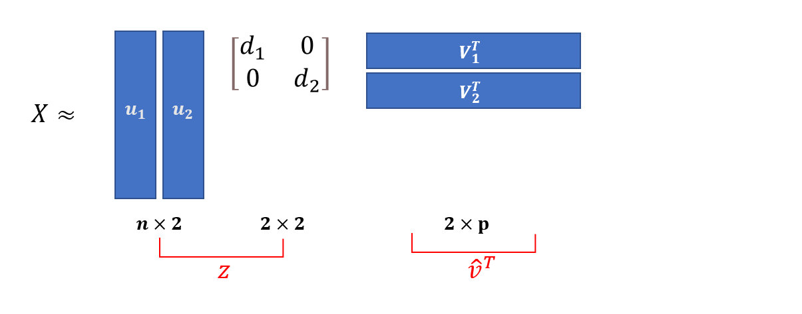
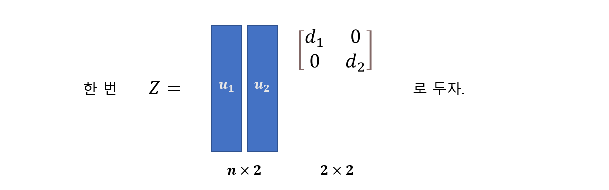
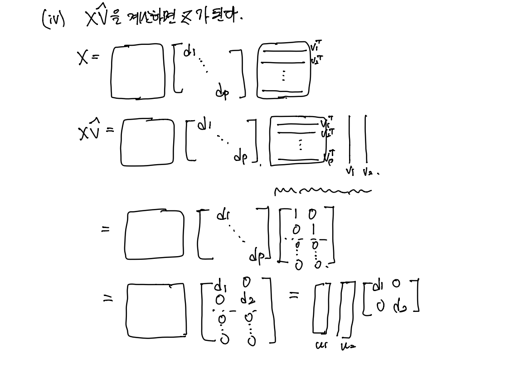

PCA
주성분분석 (PCA)
\(\bf{X}: n\times p \text{ matrix}\)
소망 : \(\bf{X}\)와 거의 비슷하면서 \(p\)는 훨씬 작은 그런 matrix를 만들고 싶다. 그런 matrix를 \(\bf{Z}\) 라고 하자.
\(\bf{Z}\)의 조건:
- \(\bf{Z}: n \times 2\)와 같이 \(\bf{X}\)보다 차원이 훨씬 작을 것.
- \(\bf{Z}\)에서 적당한 변환 \(\hat{\bf{U}}^\top\)을 하면 언제든지 \(\bf{X}\)와 비슷한 매트릭스로 복원(reconstruction)할 수 있어야 한다. 즉, \(\bf{Z}\hat{\bf{V}}^\top \approx \bf{X}\)인 적당한 변환 \(\hat{\bf{V}}^\top\)가 존재할 것.
SVD 복습
\[\underset{n\times p}{\bf{X}} = \bf{U}\bf{D}\bf{V}^\top = \sum_{j=1}^p \underset{n\times 1}{u_j}\space \underset{1\times 1}{d_j}\space\underset{1\times p}{v_j^\top} \approx \sum_{j=1}^2 u_j d_j v_j^\top\]
그런데 \(u_jd_jv_j^\top\) 의 모양이 흥미로움.


신기하게도 \(\bf{Z}\)는 (i) \(n\times 2\) matrix가 되어 \(\bf{X}\)보다 차원이 작으면서 (ii) \(\bf{Z}\)에서 적당한 변환 \(\hat{\bf{V}}^\top\)을 곱하면 \(\bf{X}\)와 비슷한 매트릭스로 언제든지 만들 수 있다.
\(\bf{Z}\)를 계산하는 법
1. 하수의 방법
\(\bf{X}\)의 \(\bf{U}\bf{D}\bf{V}^\top\) 분해 꼴을 구하고 \(\bf{D}\)에서 \(d_1, d_2\)를 제외한 나머지를 \(0\)으로 만든 뒤에 \(\bf{U}\bf{\tilde D}\)를 계산
왜 하수? \(\Rightarrow\) \(\bf{U}\)의 차원이 크다 \(\Rightarrow\) SVD를 수행할 떄 한참걸림(생각보다 엄청 오래걸림)
2. 고수의 방법
(i) \(\bf{X}^\top \bf{X}\)를 계산한다. (\(\bf{X}^\top \bf{X}: p\times p \text{ matrix}\))
(ii) \(\bf{X}^\top \bf{X}\)의 고유벡터를 계산
\(\bf{X}^\top \bf{X} = \Psi \Lambda \Psi^\top\)
그런데 \(\bf{X}^\top \bf{X} = \Psi \Lambda \Psi^\top = \bf{V}\bf{D}^2\bf{V}^\top\) 이므로 \(\bf{X}^\top \bf{X}\)의 고유벡터를 구하면 \(\bf{V}\)를 구하는 셈이 된다.
Note: \(\bf{X}^\top \bf{X}\)의 고유벡터를 구하는 시간이 \(\bf{X}\)의 SVD를 구하는 시간보다 훨씬 빠르다.
(iii) 고유벡터 \(\bf{V}\)에서 처음 2개의 col만을 남기고 나머지는 버린다. 그리고 남겨진 matrix를 \(\hat{\bf{V}}\)이라고 하자.
(iv) \(\bf{X}\hat{\bf{V}}\)를 계산하면 \(\bf{Z}\)가 된다.

\(\bf{X}\) 대신 \(\bf{V}\)를 계산해서 \(\bf{Z} = \bf{X}\bf{V}\) 이므로 \(\bf{Z}\)를 학습시키면 \(\bf{X}\)와 거의 비슷하면서 차원은 줄어들게 된다. 변수의 수를 줄여서 집어넣게 되면 Overfitting을 방지할 수 있고, 차원의 저주도 피할 수 있게 됨.
PCA는 매우 좋은 방법인데 여기에 플러스
\(\bf{X} = n\times p\) matrix 에 multicollinearity가 있을 때 \((\bf{X}^\top \bf{X})^{-1}\)를 계산할 수 없었다.
그런데 \(\bf{X} \to \bf{Z}\)로 변환하면 \((\bf{Z}^\top \bf{Z})^{-1}\)는 잘 계산된다.
- \((\bf{Z}^\top \bf{Z})^{-1} \Rightarrow \bf{Z}=\bf{X}\hat{\bf{V}}^\top \Rightarrow \bf{Z}^\top \bf{Z} = \hat{\bf{V}}^\top\bf{X}^\top \bf{X} \hat{\bf{V}}\)
Lasso나 Ridge와 같이 PCA 역시 두마리 토끼를 다 잡을 수 있다.
1. 오버피팅 X + 2.multicollinearity X
- 차원축소를 하면서 오버피팅을 벗어날 수 있게 됨.
- PCA 특징 중 하나가 다중공선성이 없어지게 하는 훌륭한 변환이다.